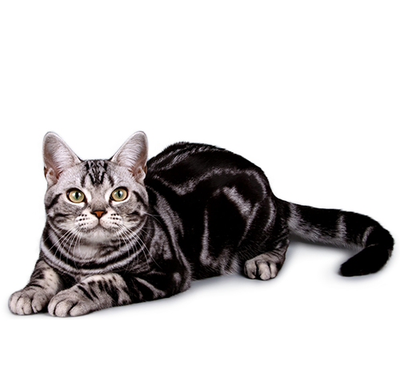

|
Породы кошек | Приюты и ветклиники | Оставить комментарий |
Абиссинская порода — это элегантные кошки средних размеров с сильными грациозными телами и
длинными стройными лапами. Для этой породы характерны округлая клиновидная форма головы
с большими миндалевидными глазами и уши с небольшими кисточками на кончиках. Короткая прилегающая
шерсть абиссинской кошки отличается тикингом — смешением цветов на каждом из волосков. Наиболее
популярный окрас — «дикий» (ruddy), но также встречаются и другие виды.

О шерсти американской жесткошерстной кошки можно судить по названию породы.
Американская жесткошерстная — это кошка крупного размера с грубой и упругой на ощупь
шерстью. Короткие и средние волоски на теле этого животного образуют волны или жесткие
завитушки. У этих кошек часто бывают кудрявые бакенбарды. Степень жесткошерстности
у животных проявляется только во взрослом возрасте: котята с очень кудрявой шерстью
могут получить волнистую шубку, и наоборот. У жесткошерстной кошки могут быть любые
окрасы, рисунки пятен и отметины.
Азиатские кошки отличаются длинным мускулистым телом среднего размера и хвостом,
сужающимся к круглому кончику. Самки азиатской кошки намного меньше и изящнее по
сравнению с самцами. Голова имеет клиновидную форму со слегка скругленным конусом.
Уши — широко посаженные, среднего размера. Глаза — большие с серебристым
окаймлением. Шерсть, похожая на мокрый шелк, — короткая, красивая и близко прилегает к
телу. В этой группе представлены кошки различных окрасов и вариантов пятнистости.
Сиамская кошка — это кошка среднего размера с длинным, стройным и грациозным телом.
Тело — хорошо сбалансированное, атлетического строения, лапы — стройные, аккуратные,
небольшого размера. Спереди голова этой кошки напоминает треугольник, сужающийся
прямыми линиями к утонченной морде. Уши — крупные и заостренные. Если мысленно
провести линию между крыльями носа и кончиками ушей, получится равносторонний
треугольник. Форма глаз — восточного типа, с наклоном по направлению к носу. Длинный,
сужающийся к кончику хвост не имеет завитков. Короткая, красивая, прилегающая к телу
шерсть имеет бледный тон с более насыщенными темными пятнами в зоне маски морды,
ушей, лап и хвоста. Она бывает различных окрасов. Цвет глаз при любых окрасах и вариантах
пятнистости всегда остается ярким, насыщенно-голубым.
Персидская длинношерстная кошка — порода среднего размера, с коренастым телом и с
массивной головой. Уши — небольшие, широко посаженные. У этой кошки маленькая
открытая мордочка с большими яркими глазами. Имеет короткие и сильные лапы с крупными
округлыми основаниями и кисточками между подушечек. Шерсть — длинная, густая и
блестящая, с плотным мягким подшерстком. Имеет короткий, но необыкновенно пушистый
хвост. Допускаются разные варианты окрасов и пятнистости.
Манчкин — это порода среднего размера с короткими лапами и длинным позвоночником. В
движениях манчкинов можно проследить сходство с перемещениями хорька — эта порода
не отличается грацией, присущей более длинноногим кошкам. Манчкины имеют плотное
тело с округлой грудной клеткой. Эти кошки бывают как короткошерстными, так и
длинношерстными, при этом обе разновидности имеют мягкую плюшевую шерсть.
Длинношерстные манчкины имеют хвост с кисточками. Манчкины могут быть любых окрасов
и вариантов пятнистости, в том числе, допустим различный цвет глаз.
Бенгальская кошка — крупная кошка с блестящей шерстью, очень развитой мускулатурой и
толстым хвостом, который часто свисает до земли. Бенгальская кошка внешне напоминает
дикую кошку: характерная густая роскошная шерсть имеет пятнистый окрас и мраморные
разводы. На широкой голове располагаются небольшие уши и бакенбарды, глаза имеют
миндалевидную форму и чёрную окантовку. Хвост толстый, сужается к чёрному кончику. Ни
одна другая порода кошек не имеет такого эффекта золотистого или жемчужного мерцания
шерсти, который можно обнаружить у бенгальских кошек.